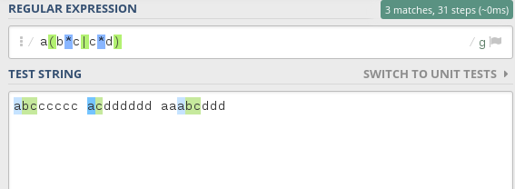
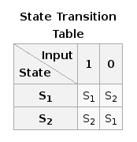
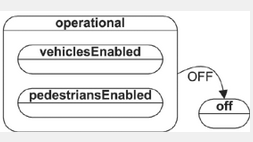
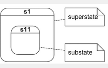
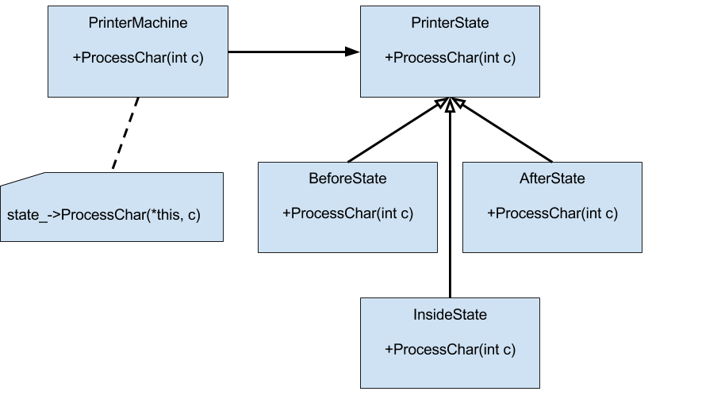

State Machines: Friend or Foe?
Cody W. Eilar Sandia National Laboratories Unclassified Introduction
Why Do I care???

Reduction of Spaghetti Code
void some_function() {
...
if ((is_running && !is_jumping) || just_started) {
...
} else if (is_boss_level && extra_feature_enabled && !ab_test) {
...
} else {
...
}
}
Clear Definition of Program State
The current state of the system is summarized by one numberMaintainability
Much easier to add more states than picking through lots of if/else statementsTesting
Adding new states only requires testing the new state, not the entire system.Imperative Program vs. Automata-Based Program
Goal: Read text file via standard input stream, and print the first word of each line.Imperative Style
int main(void) {
int c;
do {
do
c = getchar();
while (c == ' ');
while (c != EOF && !isspace(c) && c != '\n') {
putchar(c);
c = getchar();
}
putchar('\n');
while (c != EOF && c != '\n')
c = getchar();
} while (c != EOF);
return 0;
}
FSM Style
int main(void) {
enum states { before, inside, after } state;
int c;
state = before;
while ((c = getchar()) != EOF) {
switch (state) {
case before:
if (c != ' ') {
putchar(c);
if (c != '\n')
state = inside;
}
break;
case inside:
if (!isspace(c))
putchar(c);
else {
putchar('\n');
if (c == '\n')
state = before;
else
state = after;
}
break;
case after:
if (c == '\n')
state = before;
}
}
return 0;
}
Advantages of Imperative Style
Not as much codeAdvantages of FSM Style
- Single call to reading function
- Single loop
- Easier to follow flow
- Each state can be validated individually
Wanting more...
We now have nice states that we can test, but there is still quite a bit of noise in our solution. Furthermore, if the states start to become more complicated, it will be difficult to visually see in the code what our state machine is actually doingRepresentation is Key
What if we could more compactly represent our transitions and states so that it is obvious what our program is doing? I'll talk more about this in the next sections, first let's explore what state machines are.Background
What are state machines?
A mathematical abstraction used to design complex algorithms.What are state machines?
Any device that stores the status of something at a given time and can operate on input to change the state.What are state machines?
- An initial state or record of something stored somewhere
- A set of possible input events
- A set of new states that may result from the input
- A set of possible actions or outputs that result from a new state
When not to use state machines
Mathematical algorithms like numerical integration are not a good fit for FSMs.Turnstile example

Deterministic Character Reader


Regular Expressions
CD Player

State Diagram with Accompanying Transition Table

Complexity
The previous examples are fairly straight forward and simple, but what happens when things get more complicated?Limitations of FSMs
State explosion - The complexity of a traditional FSM tends to grow much faster than the complexity of the reactive system that it describesLimitations of FSMs example
If you attempt to represent a calculator with a traditional FSM, you begin to find that many events (e.g. Clear) need to be handled identically by many states.State Charts to the Rescue
State charts (introduced by David Harel) address some of the limitations of simple state machines by adding a few key concepts.- Hierarchical states
- Orthogonal regions
Orthogonal states
 Hierarchical States

Do Good, Program State Machines
Before We Begin
Here are some good resources:Ways of Implementing State Machines
- Case statements
- State Machine Pattern
- 3rd Party Libraries
Case Statements
As we saw in the first coding example in C, state machines can easily be implemented using case statements, but the more complicated the machine gets, the more difficult the state machine code is to follow.State OO Pattern
The PrinterMachine